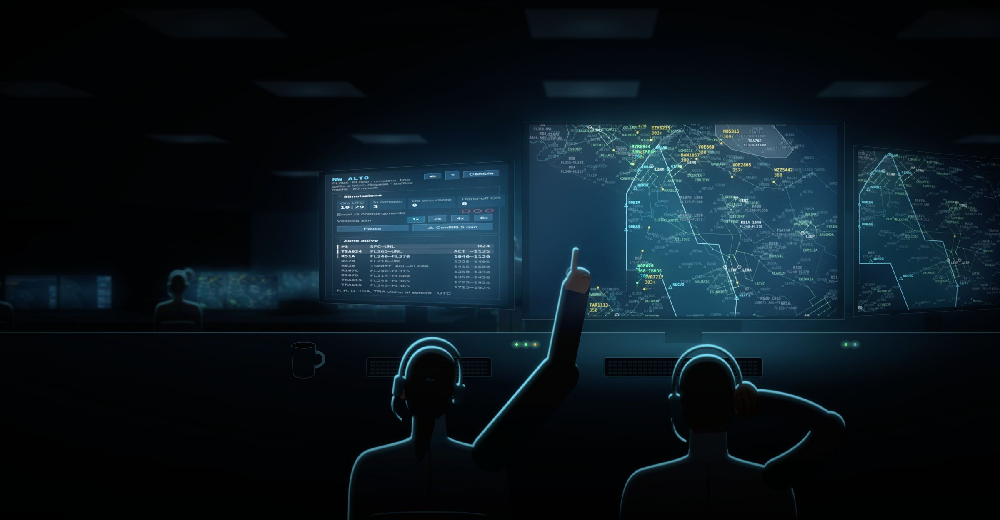
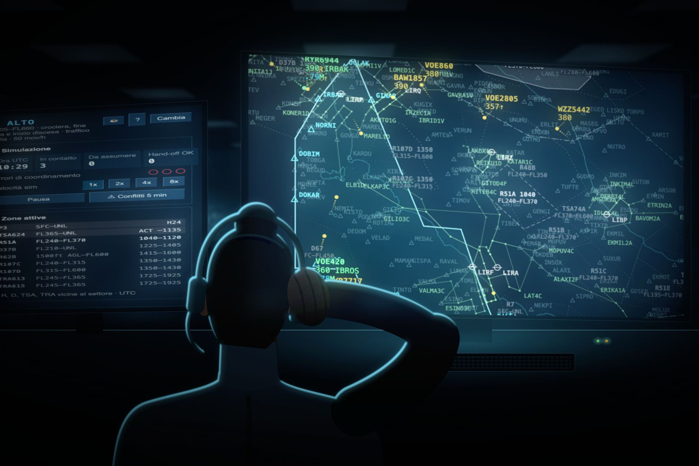
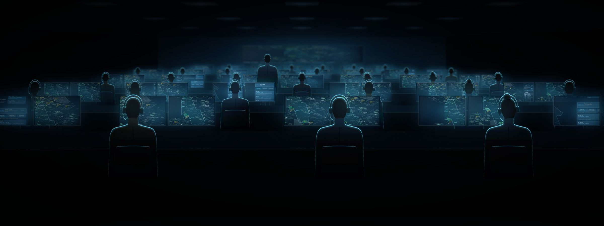

Controlla il cielo
da una sala radar
Un simulatore gratuito di controllo del traffico aereo d'area, con i settori reali di Roma ACC e Milano ACC. Prendi in carico i voli, tienili separati, consegnali al settore successivo.
Gratis, senza account. Serve un computer con mouse o trackpad e uno schermo di almeno 1100×700.
Questo è il tuo schermo. Ogni puntino è un volo.
Il radar è lo stesso dei controllori d'area: il confine del settore, i punti di riporto, le zone riservate e accanto a ogni traccia il suo tag, con nominativo e livello. Il colore ti dice di chi è.

- GialloBAW1857 390
- Non è tuo. Lo vedi perché passa vicino, ma lo controlla qualcun altro.
- MagentaVOE860 380
- Il settore precedente te lo ha passato e aspetta che tu lo prenda in carico.
- VerdeRYR6944 390
- È in contatto con te. Solo a questi puoi dare istruzioni.

Non si fanno atterrare gli aerei. Si tengono lontani l'uno dall'altro.
Il controllore d'area segue i voli in rotta, da una sala senza finestre. Il tuo compito è prendere in carico gli aerei che entrano nel tuo settore, mantenere 5 miglia o 1000 piedi fra l'uno e l'altro, e passarli al settore successivo nel punto e al livello concordati. Nel frattempo il mondo non sta fermo.
- Settori veriRoma ACC su tre strati, dalla Toscana alla Sicilia, e Milano ACC: punti FRA, rotte, procedure e zone riservate ricostruiti su dati reali.
- Traffico che si comportaVoli su flussi veri fra aeroporti, profili di salita e discesa calcolati sulle prestazioni di ogni aeromobile, semicircolare italiana compresa.
- ImprevistiTemporali da aggirare, zone militari che si attivano, richieste di livello, turbolenza, avarie radio, MAYDAY.
- Difficoltà a sceltaDa cinque a dieci voli in contatto insieme, con conflitti costruiti su misura e un tempo di reazione che si accorcia.

Dieci lezioni, da zero a un turno completo.
Il tutorial guidato non è un filmato: si controlla davvero, sulla simulazione vera. Ogni lezione prepara la situazione che serve e ti segue passo per passo, e nessun errore chiude la partita finché sei lì dentro.
- Il radar e il settore, le tracce, i colori
- Prendere in carico, dare istruzioni, passare i voli
- Separazione e conflitti, zone attive, meteo
- Emergenze e un turno di prova

Il turno comincia
quando vuoi tu.
Scegli Roma o Milano, scegli il settore e il traffico. In un paio di minuti hai il primo volo magenta che aspetta te.
Il programma completo, per il tuo computer.
La versione da scaricare è la stessa che si gioca nel browser, in una finestra tutta sua. Funziona senza connessione, non chiede account e non raccoglie dati.
Gratuito, e resterà così.
ACS Simulator è un progetto indipendente, scritto nel tempo libero. Se ti diverte, offrire un caffè è il modo più diretto per aiutarlo a crescere: nuovi settori, più procedure, altre lezioni.